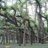

Plant Grimoire

BanyanBanyan (Ficus benghalensis) is a massive spreading fig tree with aerial roots that can cover acres of ground.
A World Tree
The banyan, also called the vata tree, the bodhi tree, or the Asiatic fig, is counted among the World Trees by the peoples who revere it. (The tree of the Buddha's enlightenment is botanically the related Bodhi, Ficus religiosa, though tradition often speaks of the two as one.)
Sacred Lore
The tree is held especially holy because the Buddha was sitting beneath one when he was suddenly illumined as to his true nature; the word bodhi itself means "enlightened." The original tree no longer lives, but a cutting taken by a Sri Lankan princess in the second century BC still grows at Anuradhapura in Sri Lanka, where it remains an object of pilgrimage. The banyan is found wherever Buddhism or Hinduism is practiced and is often planted near temples, and Vishnu is frequently shown seated beneath one, dispensing teachings of philosophy and science to his students. For all its sanctity, the tree is said to shelter many kinds of spirits, so that it is reckoned unlucky to sleep beneath one at night.
The Walking Tree
The banyan grows in an unusual way, sending roots down from its branches to take hold in the ground, which is why it is sometimes called the "walking tree" or the "tree with many feet." Its structure, like a strange organic building casting a deep shade, makes it a natural meeting place, and village councils in India, whose national tree it is, still gather beneath these trees to discuss matters of importance.
Magickal Properties
Planet: Jupiter
Powers: Luck
Ritual Uses
The banyan is reverenced by the Hindus, and the tree is planted outside around their temples. It is also connected with the worship of Maui in Hawaiian and Polynesian religions.
Magickal Uses
To simply sit beneath or look at a banyan tree brings good luck, and to be married under one ensures the couple's happiness.
The banyan's massive canopy and sacred nature make it a powerful tree for meditation and connecting with divine energies.
USDA Hardiness Zone for Ficus benghalensis sourced from Kew Plants of the World Online and UF IFAS Extension (corresponds to its native tropical range in the Indian subcontinent).